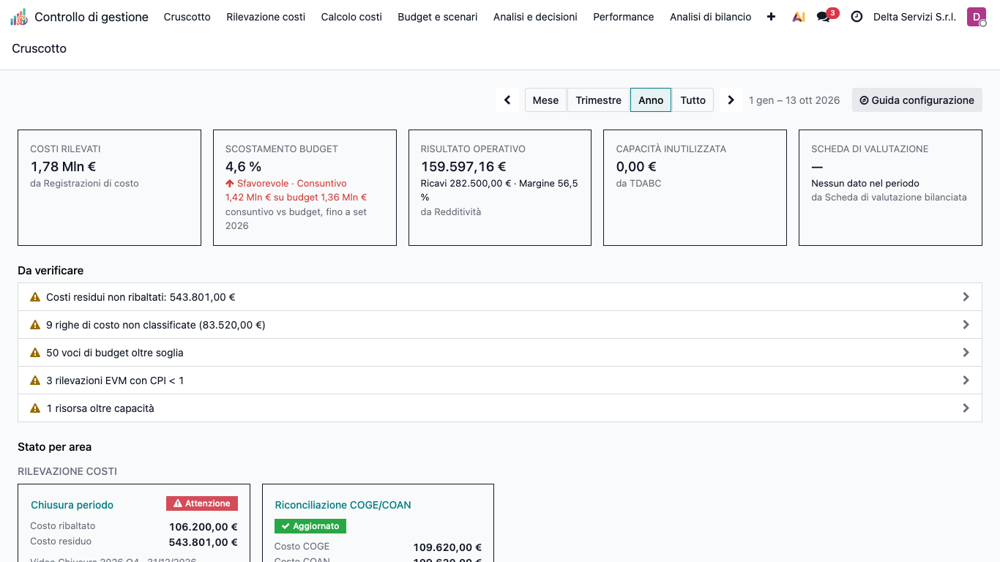
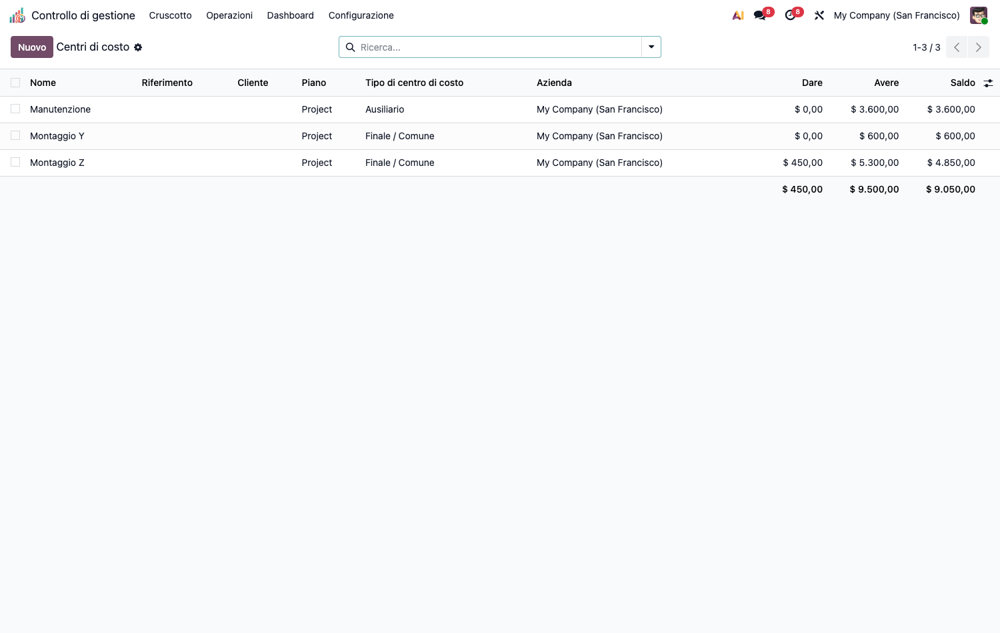
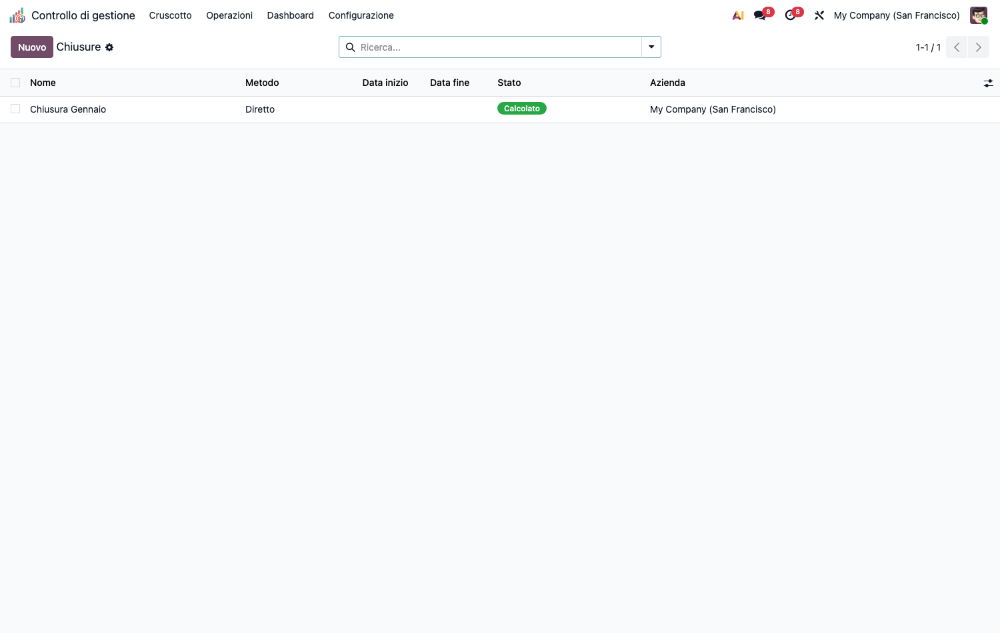
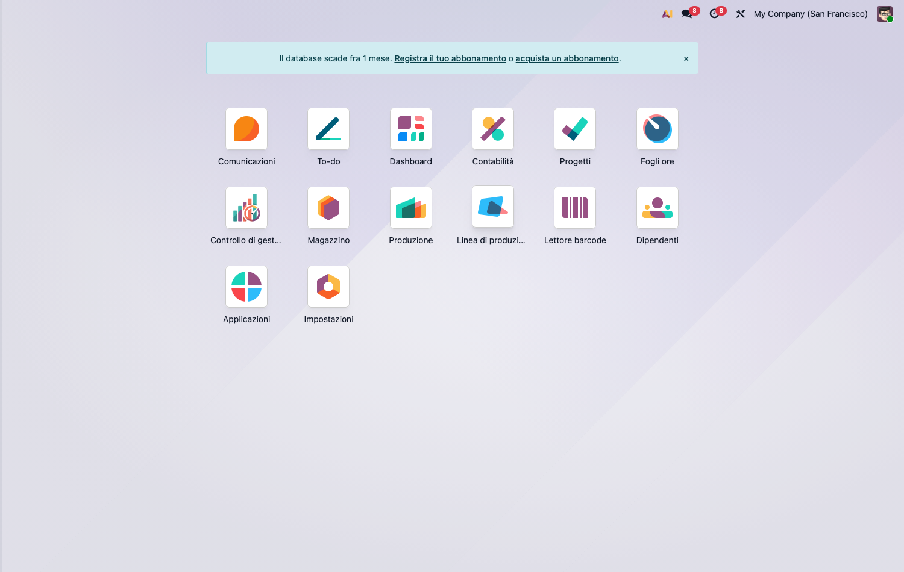
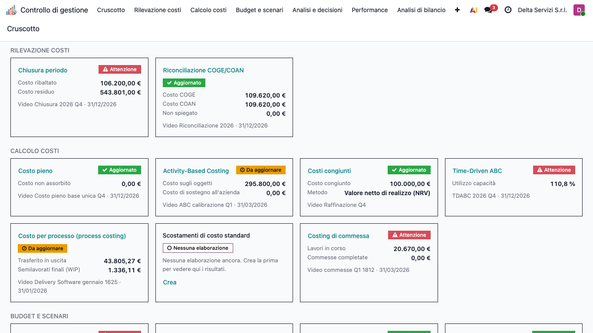
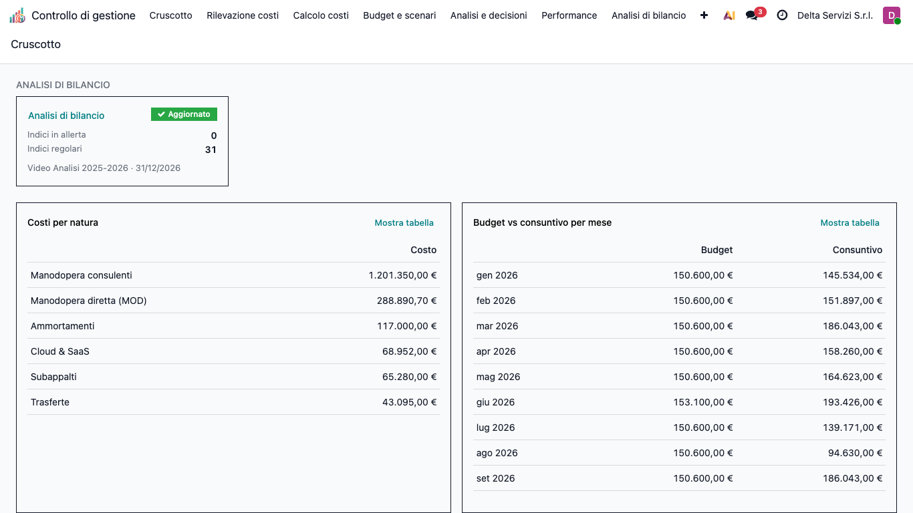

<section class="oe_container">
<div class="oe_row oe_spaced">
<div class="oe_span12">
<h1>CMC – Controllo di Gestione (cmc_base)</h1>
<p>Modulo <strong>core</strong> della suite CMC (Cost Management &amp; Controlling) per Odoo 19 Community. Applica i principi della contabilità analitica e del controllo di gestione. Tutti gli altri moduli della suite dipendono da questo.</p>
<h2>Obiettivo</h2>
<p>Costruire la <strong>base di costo</strong> su cui poggiano tutte le metodologie di costing:</p>
<ul><li><strong>Tassonomia dei costi</strong> (natura/elemento, comportamento fisso/variabile, diretto/indiretto) e <strong>oggetto di costo</strong> (speciale/comune, relativo al contesto).</li><li><strong>Centri di costo</strong> (finali, ausiliari, di periodo) sul piano analitico nativo.</li><li><strong>Ribaltamento</strong> dei centri ausiliari sui finali (diretto, step-down, reciproco con solver).</li><li><strong>Analisi di capacità</strong> con isolamento del costo della capacità inutilizzata (<em>idle cost</em>).</li><li><strong>Quadro di analisi dei costi</strong> (matrice centro × elemento) e <strong>Cruscotto</strong> del controller (indicatori, anomalie, stato delle elaborazioni).</li></ul>
<p></p>
<h2>Configurazione (step-by-step)</h2>
<ol><li><strong>Installa</strong> <code>cmc_base</code> (le app capillari si installano sopra, quando servono).</li><li>Assegna all&#x27;utente il gruppo <strong>Controllo di gestione / Manager</strong> (o Utente) da</li></ol>
<p><em>Impostazioni › Utenti</em>.</p>
<ol><li>Vai in <strong>Controllo di gestione › Configurazione › Struttura dei costi</strong>:</li></ol>
<ul><li><strong>Elementi di costo</strong> (<em>Cost Elements</em>): crea la tassonomia per natura (es. Materie prime, Manodopera diretta, Ammortamenti). Marca come <em>figurativo</em> gli elementi che non transitano in co.ge. (es. interessi di computo).</li><li><strong>Cost Driver</strong>: crea le basi di ripartizione (es. <em>Ore macchina</em>, <em>Ore servizio</em>).</li></ul>
<ol><li>In <strong>Rilevazione costi › Base di costo › Centri di costo</strong> crea i centri e assegna il</li></ol>
<p><strong>Tipo di centro</strong> (finale / ausiliario) oppure marca <em>centro di periodo</em> per i costi che restano fuori dal ribaltamento (es. Commerciale).</p>
<p></p>
<h2>Utilizzo (step-by-step)</h2>
<ol><li><strong>Registra i costi</strong>: <em>Rilevazione costi › Base di costo › Registrazioni di costo</em> — ogni riga analitica porta centro, importo, comportamento ed elemento di costo.</li><li><strong>Servizi inter-centro</strong>: <em>Rilevazione costi › Base di costo › Servizi inter-centro</em> — dichiara le prestazioni dei centri ausiliari verso gli altri centri (provider → receiver, driver, quantità).</li><li><strong>Ribaltamento</strong>: <em>Rilevazione costi › Base di costo › Ripartizioni di costo</em> → nuovo record, scegli il <strong>Metodo</strong> (diretto / step-down / reciproco) e premi <strong>Calcola</strong>. I centri ausiliari si azzerano sui finali; la matrice centro × elemento viene generata.</li></ol>
<p></p>
<ol><li><strong>Capacità</strong>: <em>Analisi e decisioni › Analisi dei costi › Analisi di capacità</em> → inserisci capacità teorica, pratica e consuntiva del centro; il sistema isola il <strong>costo della capacità inutilizzata</strong> (costi fissi su base pratica).</li></ol>
<p></p>
<ol><li><strong>Cruscotto</strong>: <em>Cruscotto</em> (home della suite) riepiloga periodo, indicatori, anomalie e stato delle elaborazioni (vedi la sezione seguente). La guida alla configurazione è in <em>Configurazione › Guida configurazione</em>.</li></ol>
<h2>Cruscotto</h2>
<p>Il <strong>Cruscotto</strong> (prima voce del menu <em>Controllo di gestione</em>) è la pagina di apertura del controller: in pochi secondi mostra se i numeri del periodo sono completi e dove qualcosa non torna, con un clic per andare al dettaglio.</p>
<p></p>
<h3>Periodo</h3>
<p>In alto si sceglie il periodo: <strong>Mese</strong>, <strong>Trimestre</strong>, <strong>Anno</strong> o <strong>Tutto</strong>. Le frecce laterali spostano al periodo precedente o successivo; accanto compare l'intervallo di date. All'apertura è selezionato l'anno in corso.</p>
<p>Se il periodo comprende la data odierna, i valori vanno <strong>da inizio periodo a oggi</strong> e il confronto è con <strong>le stesse date dell'anno precedente</strong>. Con <em>Tutto</em> il confronto non è presentato.</p>
<h3>Indicatori principali</h3>
<p>Fino a cinque riquadri, ciascuno con la fonte indicata in piccolo (es. «da Redditività»):</p>
<ul><li><strong>Costi rilevati</strong>: costi classificati del periodo, con variazione rispetto all'anno precedente. Le righe non ancora classificate non sono incluse (compaiono tra le anomalie).</li><li><strong>Scostamento budget</strong>: calcolato <strong>sui soli costi</strong>, come (consuntivo − budget) / budget; indica se è favorevole o sfavorevole. Nel periodo in corso considera solo i mesi già chiusi. Richiede il modulo Budget.</li><li><strong>Risultato operativo</strong>: dalla Redditività; se non disponibile, dal Direct costing.</li><li><strong>Capacità inutilizzata</strong>: dal primo disponibile nell'ordine Time-Driven ABC, Activity-Based Costing, Analisi di capacità.</li><li><strong>Scheda di valutazione</strong>: punteggio della scheda bilanciata, con variazione in punti rispetto alla rilevazione precedente.</li></ul>
<h3>Da verificare</h3>
<p>Elenco delle anomalie, dalle più gravi alle meno gravi (ad es. KPI in rosso, costi residui non ribaltati, righe di costo non classificate, voci di budget oltre soglia). Se ne vedono cinque; <strong>Mostra tutti (N)</strong> apre l'elenco completo. Facendo clic su una riga si apre l'elenco già filtrato, con <strong>lo stesso numero di righe</strong> indicato nel messaggio. Se non ci sono anomalie compare «Nessuna anomalia nel periodo».</p>
<h3>Stato per area</h3>
<p>Sotto, una scheda per ogni elaborazione, raggruppate per area (le stesse del menu: Rilevazione costi, Calcolo costi, Budget e scenari, Analisi e decisioni, Performance, Analisi di bilancio). Ogni scheda mostra uno stato; facendo clic si apre l'elenco delle elaborazioni.</p>
<table class="table"><thead><tr><th>Stato</th><th>Significato</th></tr></thead><tbody><tr><td><strong>Aggiornato</strong></td><td>L'ultima elaborazione completata copre la fine del periodo.</td></tr><tr><td><strong>Da aggiornare</strong></td><td>L'ultima elaborazione termina prima della fine del periodo: va rieseguita.</td></tr><tr><td><strong>Attenzione</strong></td><td>Per quell'area c'è almeno un elemento in <em>Da verificare</em>.</td></tr><tr><td><strong>Nessuna elaborazione</strong></td><td>Il modulo è installato ma non è ancora stata fatta alcuna elaborazione. Il collegamento <strong>Crea</strong> permette di avviarne una.</td></tr></tbody></table>
<p></p>
<h3>Grafici</h3>
<p>In fondo due grafici: <strong>Costi per natura</strong> (primi otto elementi più «Altri») e <strong>Budget vs consuntivo per mese</strong> (non mostrato con <em>Mese</em>; con <em>Tutto</em> raggruppa per anno). Il collegamento <strong>Mostra tabella</strong> affianca ai grafici i valori in forma di tabella.</p>
<p></p>
<h3>Cosa si vede: moduli e permessi</h3>
<p>Il Cruscotto si adatta a ciò che è installato e a ciò che l'utente può consultare. Indicatori, anomalie, schede e grafici relativi a moduli non installati, o a dati per cui l'utente non ha diritto di lettura, <strong>non vengono mostrati</strong> (mai come zero). Con la sola base compaiono <em>Costi rilevati</em>, <em>Capacità inutilizzata</em> e le relative anomalie e schede.</p>
<h3>Guida configurazione</h3>
<p>La guida passo-passo alla configurazione non è più nel Cruscotto: si apre con il pulsante <strong>Guida configurazione</strong> in alto a destra, oppure dal menu <strong>Configurazione › Guida configurazione</strong> (riservato ai manager).</p>
<h3>Domande frequenti</h3>
<ul><li><strong>Manca un indicatore.</strong> Il modulo che lo alimenta non è installato, non contiene ancora dati, oppure l'utente non ha accesso. Se più moduli possono fornire lo stesso indicatore, è usato il primo disponibile.</li><li><strong>Un indicatore mostra «—».</strong> Esistono dati, ma non nel periodo selezionato («Nessun dato nel periodo»). Cambiare periodo o eseguire l'elaborazione.</li><li><strong>Una scheda dice «Da aggiornare».</strong> L'ultima elaborazione non arriva a fine periodo: aprire la scheda ed eseguirne una nuova.</li><li><strong>Il numero nell'anomalia non coincide con quello che ricordo.</strong> I valori dipendono dal periodo selezionato e dall'azienda corrente: verificare entrambi.</li></ul>
<h2>Note</h2>
<ul><li>I centri di costo vivono sul <strong>piano analitico</strong> con colonna <code>account_id</code> (piano non-default).</li><li>Arrotondamenti a conservazione tramite <code>cmc_utils.largest_remainder</code> (usato da tutta la suite).</li><li>Il Cruscotto rileva <strong>a runtime</strong> quali moduli capillari sono installati e quali dati l&#x27;utente può leggere: mostra solo ciò che è effettivamente disponibile.</li></ul>
</div>
</div>
</section>
